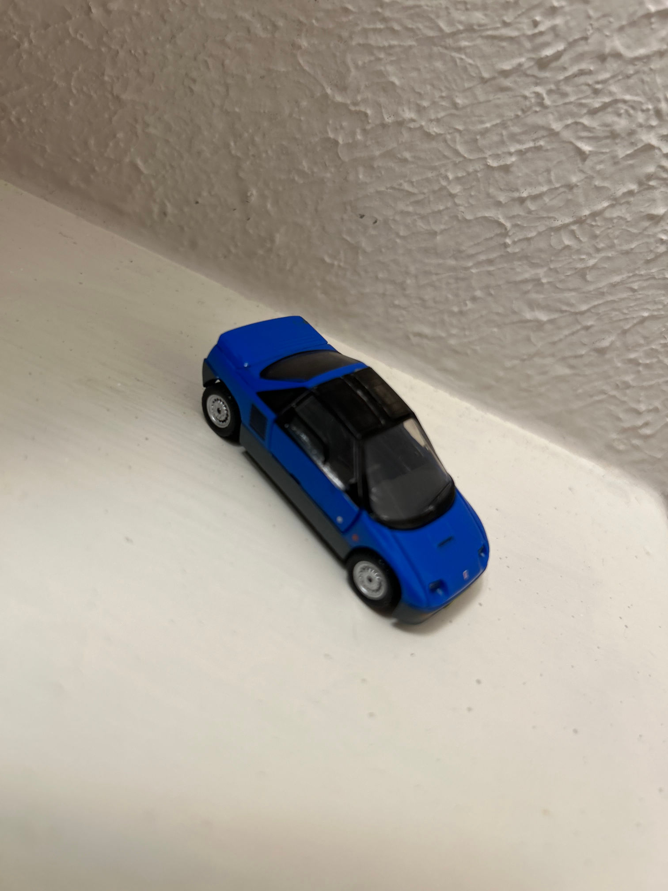
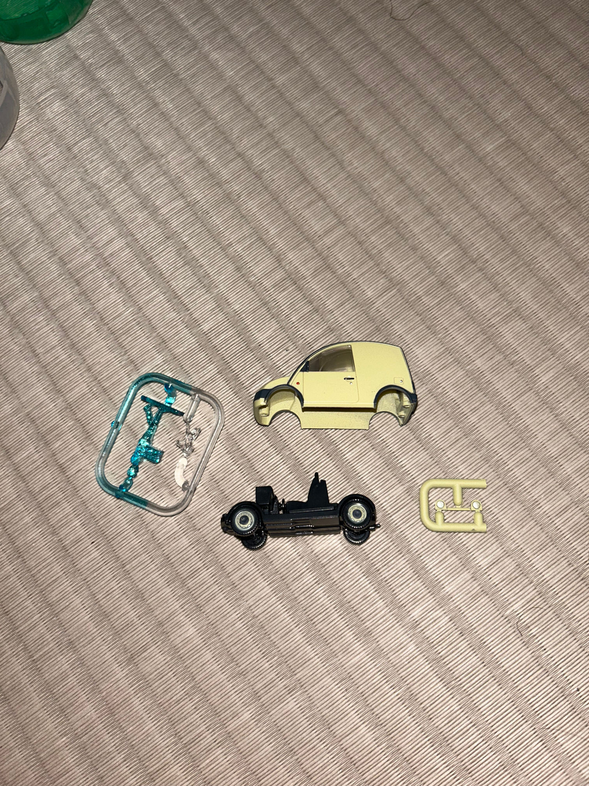
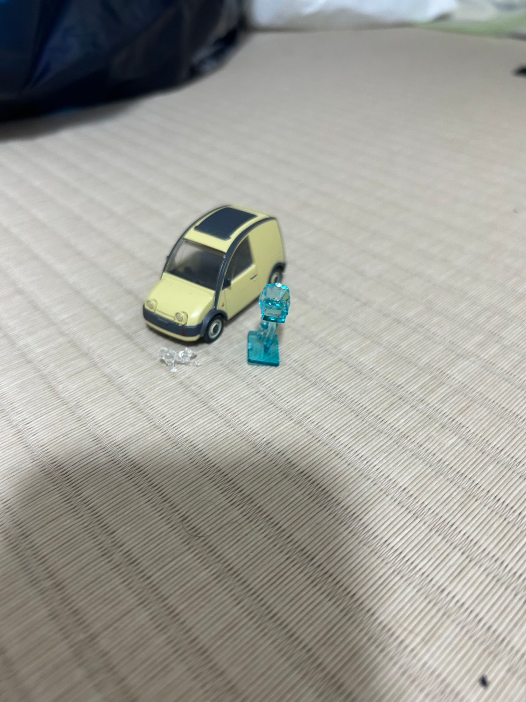

Japan's Most Iconic Model Cars Come Out Of Vending Machines
Remember those 25-cent gumball machines? The ones where you could trade a quarter for a gumball older than the dotcom crash? Imagine that, but instead of a chunk of crusty candy, you win a random 1/64th scale model car. That’s essentially Gachapon!

Bandai Namco’s toy vending machines are addictively simple. Insert cash (1), twist dial (2), and collect model (3). Since the 1970’s, Gachapon machines have dispensed billions of anime figurines, sushi keychains, and (most notably), tiny scale vehicles. For vehicle Gacha, each machine is dedicated to a specific make and model. Certain things are randomized: you may win one with a body kit, rare paint color, or a specific trim level. Whole subcultures exist around the trading and collecting of these tiny models. When I first came to Japan, it didn’t take long for these miniature machines to steal my heart - I was hooked!
I was most surprised by the sheer variety of models offered in the Gacha parlors. Of course, sports cars and big trucks were well represented. But some of the most popular machines were stocked with weirder, less well-known vehicles. I started to wonder: what made those cars special enough to warrant a dedicated Gacha machine? Was there really that much demand for a toy machine that only dispenses minivans? The more I dove down the rabbit hole of fan sites and forums, the more I learned about the unique history of each of these cars. In one way or another, each of these vehicles are icons of Japanese car culture – not because of their performance or styling, but because of their stories. So here are the stories behind Japan’s most iconic cars, and why they’re worth your gumball money.
Nissan Cima (1988-1990)

Why did no one tell me about Nissan’s late-80’s rear-wheel-drive luxobarge? At a colossal (for Japan) 193 in long, the Nissan Cedric/Gloria Cima was almost as big as a Lincoln Continental! Why did Nissan only sell this tank in Japan, where big vehicles are taxed to oblivion?
Given it’s economic context, the Cima starts to make sense. In the late 80’s, Japan was in a period known as the baburu keiki (bubble economy). During this time, the yen was strong and interest rates were low. Many used this opportunity to invest in real estate, which drove investment asset prices up nationwide. More growth meant more disposable income, and what better way to flex your wealth than an absurdly expensive car? Investors with newfound cash flocked to the Cima: over 35,000 found a home in it’s first model year alone! The Cima’s popularity was so shocking that period media invented the term “Cima Phenomenon” to describe Japan’s increasing obsession with luxury autos.
The Cima was the ultimate JDM baller car for a few reasons. In Japan, wheelbase and displacement taxes make it expensive to own anything larger than a kei car. As a result, big vehicles carry some serious clout. To capitalize on this, the Cima was built as large as legislation would allow, making it one of the first Japanese “super-sedans”. The Cima complimented this imposing size with cutting-edge tech. Features like a twin-cam turbo V6, an integrated CRT television, and electronic air suspension all added to the Cima’s hyper-luxury image. Technology was the Cima’s main selling point against it’s bitter rival, the Toyota Crown. While the Crown’s legacy far outstrips the Cima’s, Nissan’s first super-sedan carries clout even today. Otherwise there wouldn’t be a gacha machine dedicated to it!
Autozam AZ-1 (1992-1994)

Let’s set the scene: It’s 1992. You’re a middle-class Japanese salaryman who just got a bonus. What subcompact sports car do you buy? Autozam aimed to answer this question with the absolutely insane, no-holds-barred AZ-1.
Unveiled at the 1989 Tokyo Motor Show, the production AZ-1 was originally a Suzuki project, abandoned and sold to Mazda. The AZ-1’s design was nuts, even for the time. The original prototype even had pop-up headlights, which were only removed for structural reasons. All the more surprising that the designer, Toshihiko Hirai, was designing the (comparatively reserved) MX-5 around the same time. Imagine a world with a crazy gull-wing doored, mid-engine Miata!
This design wasn’t just for weirdness’ sake: it was the AZ-1’s biggest selling point. In the baburu keki period, kei-class sports cars were set to become a major battlefield for automakers. Average people finally had enough money to own a car, and automakers wanted in on that budget-conscious-ballin’ money. But when your competitors are also limited to 66 horsepower, your vehicle needs a way to distinguish itself. The Honda Beat was the first kei sportscar to market, and it was a mid-engine drop-top making almost 100 hp / liter. naturally aspirated, in 1991! Five months later, Suzuki unveiled the Cappuccino, which one-upped the Beat with double the number of roof configurations. The Cappuccino could switch between a T-top, targa, hardtop, or convertible at the owners’ whim! Between these two pint-sized sportscars, the AZ-1 had some stiff competition in the quirkiness department.
Sadly the AZ-1’s weridness wasn’t enough to sell. The bubble economy popped in late 1991, when Tokyo real estate prices collapsed from their record highs. By 1992, the average person could barely afford any car, much less an impractical one. The same quirks that made the AZ-1 so desirable as a fun car made it nigh-unsellable as a daily driver. Critics derided the gull doors for eating into an already cramped interior. It’s mid-engine layout meant no trunk, and the tiny frunk could barely fit a donut spare. Mazda didn’t even come close to it’s sales target of 800 units per month, and by 1994, the AZ-1 was dead. And yet, it’s legacy lives on in Gashapon machines and the hearts of short-statured enthusiasts everywhere!
|  | |
|---|---|
| front quarter view | front view |
Subaru 360 (1958-1971)

Often compared to the VW beetle, the Subaru 360 was the first true “people’s car” of Japan. After World War 2, Japan wanted to incentivize people and small businesses to get on the road. In 1949 it created the Kei segment - a special class of subcompact car with small engines and smaller dimensions, all encouraged by lenient tax breaks. While many automakers tried, the first successful vehicle in the kei segment was none other than the Subaru 360. On paper, the 360 was nothing special. It’s two-stroke, rear mounted engine only put out a 25 hp, and weighed only 925 lbs. But a combination of radical efficiency (66 mpg advertised!) and distinctive styling made the 360 a success in its home market. But stateside, the 360 had an entirely different reception.
You may know Malcom Bricklin from his Yugo-importing and safety-centric-sport-coupe designing fame. But in the late 60’s, he also founded Subaru of America to compete with the VW-dominated budget segment. Cheaper and more efficient than the VW Beetle, the 360 seemed destined for success in the US. But a jaded review from Consumer Reports unfairly derided the 360 for slow acceleration and lackluster safety. One quote reads: “The Subaru ate up almost half a minute in accelerating for 30 mph to 50 mph. That’s a lot of time to spend on the wrong side of a two-lane road, should one ever try to pass another car.” As if any sane 360 driver would try passing in an oncoming lane! Unfortunately, this short-sighted review irreparably damaged public perception of the Subaru. 360s languished on dealer lots, until years of slow sales eventually killed Bricklin’s licensing deal in 1971. Maligned in the States, the Subaru 360 is nonetheless celebrated across the Pacific. Today, “the ladybug” is still seen as a symbol of Japan’s technical and societal reconstruction after the destruction of WWII. $3.50 was a steal for this replica of Japanese car culture’s roots!
| parts assembly | front quarter view | rear view |
Nissan S-Cargo (1989-1991)

If you thought retro-styling was a uniquely 21st century trend, think again. At the height of the bubble era, Nissan unveiled not one, not two, but FOUR retro-styled cars. Of these, two were regular compacts, one was a roadster, and one, the S-Cargo, was a delivery van! When it went out of production in 1991, retro-styled work van enthusiasts had to wait seventeen years for HHR Panel to pick up the torch! Predicting the retro-styling trend by multiple years, the S-Cargo’s success proved that style sometimes trumps substance.
While their appearance sometimes inspires laughter, Nissan’s Pike cars always seemed in on the joke to me. Even the name “Pike Car” is a pun, as the venture was meant to “spearhead new, cutting edge design”. But instead of looking to the future for inspiration, Nissan turned to the past. Their search brought them to Naoki Sakai, a Japanese designer with a background in fashion. Sakai described his design mentality as follows, “car designers are highly elite and only look at the future and evolution of cars… [but] Fashion design goes back and forth freely”. Nissan applied this philosophy to car design, resulting in the first pike car – the Be-1.
The Be-1’s popularity could not be overstated. At the car’s public unveiling, Sakai recalled hearing the same two words over and over: kawaii (cute) and hoshii (I want it). Nissan stirred the pot further by announcing that the Be-1 would only be sold for one year. This hype translated directly into sales success - Nissan had to implement a lottery system since demand outstripped supply by 10 to 1. This unexpected success led to more Pike cars - the safari-styled Pao, the retro roadster Figaro, and of course, the mollusk motorcar S-Cargo.
Unlike the Be-1, I can guarantee that there was no prior demand for a snail-themed delivery van. No one was beating down the doors of Nissan’s corporate HQ, bemoaning the absence of invertibrate-themed work vehicles. But Nissan built the S-cargo anyway, and they didn’t mail it in. The S-Cargo was available with a canvas folding roof, presumably for those extra-tall deliveries. It also featured a removable sushi tray and snail-themed mud flaps. Powertrain-wise, it was essentially a Nissan Pulsar, which meant a wheezy 1.5L inline-4 and a 3-speed automatic. I also can’t imagine that the downward-sloping roofline helped cargo capacity, but Nissan claims “the high roof of the cargo area was especially popular”. Maybe I don’t get the hype - if you want an iconic Japanese delivery vehicle, there’s a much more obvious choice…
|  |  | |
|---|---|---|
| parts assembly | front quarter view | side view |
Honorable Mention: AE86 Corolla

If there’s a single vehicle that had to be on this list, it’s this one. The AE86 Toyota Sprinter Trueno is an uncontested motorsports icon. You may know it as Le Mans victor Keiichi Tsuchiya’s vehicle of choice. Or maybe Initial D was your gateway drug to the world of auto enthusiasm. From these sources, the 86 has gained a reputation for being the ultimate drift machine.
But even in it’s time, AE86 Trueno Sprinter was’t the most powerful or best handling car. Before the drifting scene took off, it was seen as “just another used cheap, reliable … car”. But these pedestrian origins actually contributed to the 86’s popularity. Intended for fuel savings, the lightweight body and near 50/50 weight distribution also gave the 86 superb handling characteristics. While it’s 1.6 liter 4-cylinder was underpowered, especially compared to other drift machines, this forced AE86 drivers to learn good driving technique. Because of these characteristics, “Drift King” Keiichi Tsuchiya famously stated, “[t]he 86 helps you become a better driver.” The 86 may not have been the most performant drift car, but it was the right car at the right time.
Suzuki Jimny (2018-Present)

“LIFE IS JIMNY” Boldly proclaims this Gachapon machine. Who am I to argue? I had assumed that displacement and wheelbase taxes would make off-roaders a rare sight in Japan. But I’ve been pleasantly surprised by the number of Land Cruisers, Wranglers, and overlanding Tacomas I’ve seen here! And of course, Jimnys. Lots of Jimnys.
Let’s back up for a second, though. What is a Jimny? Where did the name come from? The most popular hypothesis claims that Jimny is a spoonerism of “Jeep” and “mini”. While Suzuki themselves apparently support this view, many believe other theories. Some claim that Jimny is a reference to Jiminy Cricket, Pinocchio’s upbeat, insectoid conscience. Still others argue that Jimny stems from translating “Gemini” to Japanese phonetics. Just like the Willys Jeep, the Jimny name debate has been raging for decades, and shows no sign of stopping now.
Name controversy aside, the story of what would become the Jimny begins in the late 1960’s. Cars like the Subaru 360 made driving accessible for more people, but only in places with good infrastructure. Suzuki saw a gap in the market for a kei-class car focused solely on off-road capability. Such a vehicle would have the utility of a much larger truck, but be cheaper to own and run. The first Jimny was built in 1970 to take a chance on this promising market. As it turned out, demand for capable, budget vehicles was massive! Since it’s release the 70’s, Jimnys flew off of (metaphorical) shelves, kickstarting the popular of 4WD kei car segment in Japan.
The spirit of the budget off-roader continues in the modern, fourth generation Jimny. The 2018 model has a relatively simple mechanical part-time 4WD system, a feature of the Jimny since the first generation. Clever parts sharing also keeps the costs down. The JDM Jimny is offered in both the kei class and the larger “compact” class. But if you look closely at Suzuki’s press photos, it’s obvious that the compact is just the kei model with a larger engine and bigger fender flares. This modularity makes the Jimny a common choice for overlanding builds, which seem just as popular in Japan as in the states. The Gacha model actually came with multiple bumpers, so you can choose whether you want a bone-stock Jimny or a rock-crawling powerhouse!
| parts assembly | front quarter view | rear 3/4 view |
That’s it for the roundup! There were a few more vehicles I wanted to get to - but if I don’t end this somewhere I never will. Thanks for bearing with the diversion from my usual format, and let me know if you’re interested in more articles like this!